Настройки
Общее
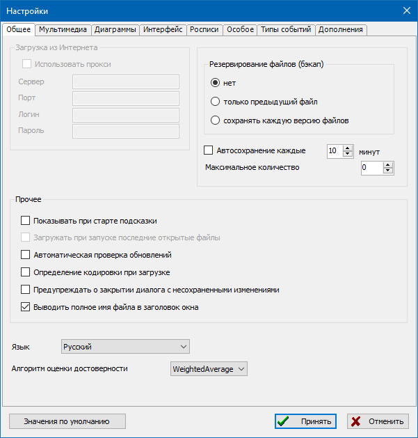
Загрузка из Интернета
- Использовать прокси-сервер
-
Эта настройка необходима в тех случаях, когда выход в интернет для загрузки карт осуществляется через прокси-сервер.
В настоящее время опция заблокирована и не используется.
- Сервер, Порт, Логин, Пароль
- Параметры подключения к прокси-серверу.
Резервирование и автосохранение
- Резервирование файлов (бэкап)
-
- нет - бэкап не выполняется;
- только предыдущий файл - при каждом сохранении базы данных пользователем, в папку где лежит ged-файл записывается файл бэкапа `*.ged.bak`;
- сохранять каждую версию файлов - при каждом сохранении копия старого файла копируется в папку `__history`.
- Автосохранение каждые N минут
-
Если эта опция включена, программа автоматически по таймеру сохраняет базы данных пользователя
(только в том случае, если файл был изменен).
- Максимальное количество N
- Эта опция определяет количество ревизий бэкапа, хранимых в папке `__history`. В случае превышения, старые файлы удаляются.
Прочее
- Показывать при старте подсказки
-
При включении этой опции, при старте программы будут показываться
полезные для работы в программе подсказки и рекомендации.
Также после загрузки любой базы данных будут показаны напоминания о ближайших днях рождений и юбилеях.
- Загружать при запуске последние открытые файлы
-
Если включено, то автоматически открывается последний использованный файл.
В настоящее время, после изменения архитектуры программы, данная опция не действует.
- Автоматическая проверка обновлений
-
При включении данной опции, программа при старте будет проверять наличие новых версий.
Внимание: обновления не скачиваются и не устанавливаются, это только уведомления.
- Определение кодировки при загрузке
-
Эта опция полезна в том случае, если могут загружаться файлы из сторонних источников с нестандартными кодировками.
Опция позволит определить кодировку и загрузить файлы с правильным текстом.
- Предупреждать о закрытии диалога с несохраненными изменениями
-
Полезно для предотвращения потери данных, введенных в любом диалоге редактирования.
Пользователь получит предупреждение, если есть изменения и диалог закрывается без сохранения.
- Выводить полное имя файла в заголовке окна
- Включает индикацию полного (вместе с путем) имени текущего файла в заголовке главного окна.
- Язык
-
Выбор языка интерфейса программы.
Переключение выполняется сразу "на лету", без перезапуска программы.
- Алгоритм оценки достоверности
-
Опция определяет алгоритм, по которому в диаграммах деревьев
и иных модулях программы расчитывается индекс достоверности данных.
Мультимедиа
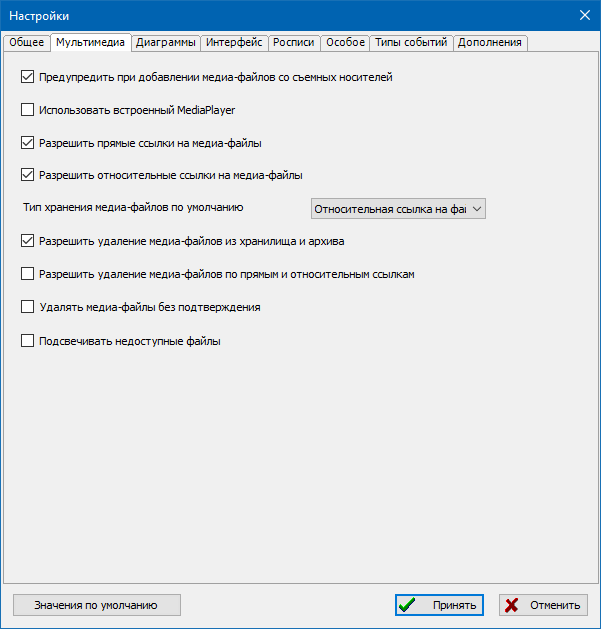
- Предупредить при добавлении медиа-файлов со съемных носителей
-
При включении, программа будет предупреждать, если пользователь добавляет медиа-файл
с отключаемого от компьютера устройства (флэшка, компакт-диск и др.).
- Использовать встроенный медиа-плеер
-
Если опция установлена, то будет использоваться встроенный медиаплеер GEDKeeper.
Если флажок не установлен, то будет использоваться системный просмотрщик медиафайлов по умолчанию.
- Разрешить прямые ссылки на медиа-файлы
-
Если опция установлена, то файлы мультимедиа не копируются в подкаталог, где хранится база данных.
Вместо этого используется прямая ссылка на местонахождение файла.
Примечание: это может затруднить перенос базы данных в другое место.
- Разрешить относительные ссылки на медиа-файлы
- Если опция включена, программа будет позволять добавлять мультимедиа-файлы с относительными путями.
- Тип хранения медиа-файлов по умолчанию
-
Определяет тип хранения медиа-файлов, который будет сразу по умолчанию предлагаться в диалоге добавления
мультимедиа-записей.
- Разрешить удаление медиа-файлов из хранилища и архива
- Если опция включена, программа будет позволять удалять мультимедиа-файлы из хранилища и архива.
- Разрешить удаление медиа-файлов по прямым и относительным ссылкам
-
Если опция включена, программа будет позволять удалять мультимедиа-файлы по прямым (абсолютным)
и относительным путям. Внимание: такие действия связаны с риском потери данных,
проверяйте наличие дубликатов важных файлов!
- Удалять медиа-файлы без подтверждения
-
Если опция включена, мультимедиа-файлы будут удаляться без дополнительного подтверждения.
Внимание: такие действия связаны с риском потери данных!
- Подсвечивать недоступные файлы
-
При включении опции, в основном списке мультимедиа-записей будет выполняться проверка на наличие/доступность
соответствующих файлов и подсветка светло-красным, если файл недоступен.
Диаграммы
Родословные древа
Для вывода родословных деревьев используется две группы настроек:
настройки отображения персон в древе и настройки оформления.
Отображение персон в древе
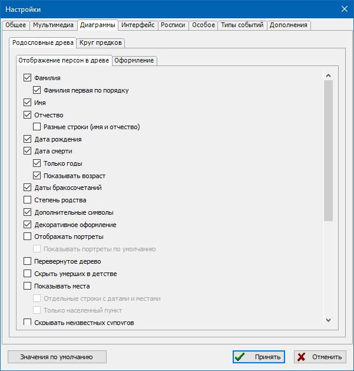
В этой группе настроек определяется состав отображаемых данных:
нужно-ли выводить фамилии, имена и отчества, даты рождения и смерти, необходимость вывода только годов в датах.
- Фамилия
- Определяет возможность вывода фамилий в карточках персон.
- Фамилия первая по порядку
-
Определяет порядок, в котором будут выводиться части имени в карточке персоны:
"Фамилия Имя Отчество" или "Имя Отчество Фамилия".
- Имя
- Определяет возможность вывода имён в карточках персон.
- Отчество
- Определяет возможность вывода отчеств в карточках персон.
- Разные строки (имя и отчество)
- Определяет, будут ли имя и отчество выводиться в одну строку "Имя Отчество" или в разных строках. Если в одну строку - карточка меньше по высоте, но шире.
- Дата рождения
- Определяет возможность вывода даты рождения в карточках персон.
- Дата смерти
- Определяет возможность вывода даты смерти в карточках персон.
- Только годы
- Если опция выключена, даты выводятся полностью, иначе - только год, без дня и месяца.
- Показывать возраст
- Опция включает отображение расчетного возраста согласно дате рождения и дате смерти (если есть).
- Даты бракосочетаний
- Степень родства
- При включении опции, при каждой перестройке древа для всех персон будет выводиться их степень родства по отношению к центральному человеку в древе.
- Дополнительные символы
-
Опция "Дополнительные символы" используется для вывода специальных символов для некоторых категорий людей: специальные иконки для участников ВОВ, погибших, ветеранов труда,
кавалеров Георгиевского креста, репрессированных.
Эти категории задаются при помощи раздела "Сноски" в редакторе персон.
- Декоративное оформление
- Опция "Декоративное оформление" выключает отдельные графические элементы и тени.
- Отображать портреты
- Показывать портреты по умолчанию
-
Если опция включена, а у определенной персоны отсутствует заданный портрет -
тогда будет выведено шаблонное изображение, обозначающее мужчину или женщину.
- Перевернутое дерево
- Если опция выключена, дерево отображается с ветвями предков вверх и потомков вниз от центральной персоны. При включении, порядок переворачивается: предки внизу, потомки вверху.
- Скрыть умерших в детстве
-
Опция "Скрыть умерших в детстве" полезна при активной работе с данными при обработке различных источников,
чтобы сократить объем выводимых персон и упростить работу.
- Показывать места
- Если опция установлена и указано одно или несколько мест рождения/смерти, то они отображаются.
- Отдельные строки с датами и местами
- Если опция выключена, даты рождения/смерти и соответствующие места - выводятся в одну строку.
- Только населенный пункт
-
Включенная опция сокращает выводимое в карточке персоны место до указания только населенного пункта,
скрывая остальные части.
Внимание: строки мест должны быть заданы в стандартном формате - разделитель "," (запятая).
- Скрывать неизвестных супругов
-
Включенная опция убирает из диаграммы отображение неизвестных супругов персон. Внимание: неизвестным считается супруг, никак не указанный в записи семьи
(см. Семейные записи); в случае, если в семье супруг указан как персона с имененем N или любым другим - это уже считается указанием
на конкретную запись. Также опция не скрывает неизвестных супругов, в случае, если у персоны несколько браков.
- Проверять допустимый размер дерева
-
Данная опция до построения дерева вызывает расчет максимального количества персон,
которое может быть отображено для выбранного человека.
В случае превышения суммы предков или потомков числа 2048 (подобрано опытным путём) - древо построено не будет.
- Пунктирные линии усыновленных
-
В случае включения данной опции и наличия в дереве усыновленных персон,
связывающие линии от этой персоны к другим будут пунктирными
(см. Персональные записи).
- Пунктирные линии гражданских супругов
-
В случае включения данной опции разведенные супруги или партнеры в незарегистрированном браке,
будут соединены пунктирными связывающими линиями.
- Жирный шрифт имен
- В случае включения опции имена персон в карточках будут выводиться полужирным шрифтом.
- Минимизация ширины
-
Выполняется специальная подгонка для экономии пространства изображения дерева,
персоны выводятся менее разреженно.
- Показывать специальные заметки
- (см. Сноски).
- Одинаковая ширина карточек
-
Опция включает режим, при котором все карточки персон в древе получают одинаковую ширину,
равную ширине самой крупной карточки в древе.
- Полное имя в одну строку
-
Эта опция позволяет носителям восточных иероглифических языков отображать все части имени в одну короткую строку,
вместо разнесения иероглифов в разные строки.
- Обозначения дат
- Опция включает традиционные обозначения дат рождения "*" и смерти "+", а также скобки вокруг ("[" и "]").
- Траурные края
- Опция позволяет выключить "траурную" - широкую черную рамку у умерших персон.
- Использовать дополнительные даты
- Опция позволяет отображать вместо отсутствующих дат рождения или смерти - даты крещения или погребения.
- Встраивать изображения в SVG
-
Опция определяет способ сохранения миниатюр портретов при сохранении в файл SVG изображений деревьев.
Если опция включена - портреты будут закодированы специальным образом и внедрены в файл SVG,
если опция не включена - портреты будут сохранены раздельными файлами в папку, одноименную с файлом SVG.
- Расширенные деревья
-
Опция включает возможность отображения в диаграммах деревьев (см. Родословные деревья)
не только ветвей предков и потомков центральной персоны,
но также и ветвей предков супругов центральной персоны.
Оформление
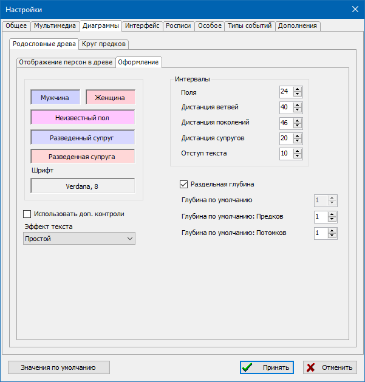
Эта группа настроек определяет внешнее цветовое представление и основной шрифт вывода деревьев на экран.
- Цвет карточек мужчин
- Выбор цвета для карточек мужчин.
- Цвет карточек женщин
- Выбор цвета для карточек женщин.
- Цвет карточек персон неуказаного пола
- Выбор цвета для карточек персон без указанного пола.
- Цвет карточек разведенного супруга
- Выбор цвета для разведенного мужчины.
- Цвет карточек разведенных супруг
- Выбор цвета для разведенной женщины.
- Шрифт текста карточек
- Выбор шрифта текста в дереве.
- Использовать доп.контроли
-
Опция включает возможность управления диаграммами деревьев (см. Родословные деревья)
при помощи дополнительных всплывающих элементов контроля.
Интервалы
Управляет интервалами на диаграммах деревьев в пикселях (точках).
- Поля
- Опция определяет ширину полей сверху, снизу, слева и справа от диаграммы дерева.
- Дистанция ветвей
-
Горизонтальное расстояние между карточками персон, относящимися к разным ветвям потомков.
Значение по умолчанию, может быть шире, если формирование диаграммы требует
расположить ветви дальше друг от друга.
- Дистанция поколений
- Расстояние между уровнями поколений на диаграмме.
- Дистанция супругов
- Горизонтальное расстояние между карточками супругов, когда вывод их детей не требует иного, более широкого расположения.
- Отступ текста
- Поля от краев карточки персон до текста.
Глубина поколений
- Раздельная глубина
-
Если опция выключена, при открытии диаграммы по умолчанию
будет общая для предков и потомков глубина вывода поколений.
- Глубина по умолчанию
-
Эта опция определяет глубину по умолчанию в поколениях и предков и потомков,
когда пользователь открывает диаграмму деревьев. Значение -1 обозначает неограниченную глубину.
- Глубина по умолчанию: Предков
- Эта опция определяет глубину по умолчанию в поколениях предков, когда пользователь открывает диаграмму деревьев.
- Глубина по умолчанию: Потомков
- Эта опция определяет глубину по умолчанию в поколениях потомков, когда пользователь открывает диаграмму деревьев.
Круг предков
Управляет визуальными характеристиками диаграммы круга предков.
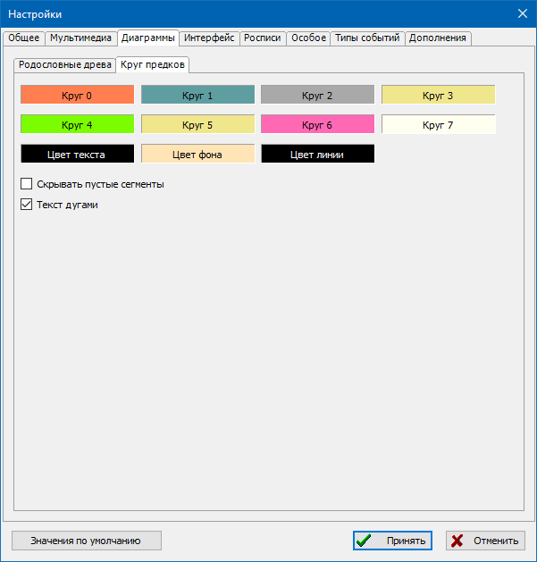
- Цвета кругов с 0 по 7
- Управляет цветом круга N.
- Цвет текста
- Задает цвет текста. Убедитесь, что он не совпадает с «Цветом фона».
- Цвет фона
- Задает цвет фона для текста. Убедитесь, что он не совпадает с «Цветом текста».
- Цвет линий
- Задает цвет линий между сегментами круга.
- Скрывать пустые сегменты
- Сегменты без данных не отображаются.
- Текст дугами
-
Если опция установлена, текст отображается в виде дуги, повторяющей кривизну сегмента.
В противном случае текст отображается полностью горизонтально или вертикально.
Интерфейс
Все списки
Управляет характеристиками для каждого отображаемого списка.
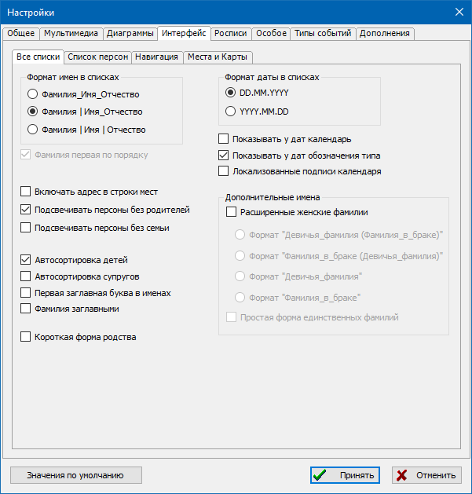
Формат имен в списках
- Формат имен в списках
-
Опция определяет способ вывода имён в столбцах списков персон:
-
ФИО
все три части имени выводятся в одном столбце;
-
Ф_ИО
фамилия в отдельном столбце, имя-отчество в общем;
-
Ф_И_О
все три части выводятся в раздельных столбцах.
- Фамилия первая по порядку
-
Опция определяет порядок вывода частей имени в столбцах списков:
Фамилия-Имя-Отчество или Имя-Отчество-Фамилия.
Даты
- Формат даты в списках: dd.mm.yyyy, yyyy.mm.dd
-
Форматы
-
DD.MM.YYYY
Даты будут показаны в следующем порядке: день, месяц, затем год. Каждый сегмент отделен точкой.
-
YYYY.MM.DD
Даты будут показаны в следующем порядке: год, месяц, затем день. Каждый сегмент отделен точкой.
- Показывать у дат календарь
- Опция включает у дат отображение обозначений календаря: григорианского, юлианского, еврейского, французского и др.
- Показывать у дат обозначения типа
- Опция включает у дат отображение обозначений типов: относительная дата (~), период до ("<"), период после (">") и др.
- Локализованные подписи календаря
-
Если данная опция не включена, календарь дат (если включена опция выше) - указывается одной буквой на латиннице,
иначе - выводятся национальные обозначения на выбранном языке интерфейса.
Дополнительные имена
- Расширенные женские фамилии
-
Стандарт GEDCOM для хранения генеалогической информации не определяет способа разграничения
для женщин фамилий девичьих и в браке. Программа GEDKeeper
добавляет к стандарту способ ввода фамилий в браке, но только при включении этой опции.
При этом обычная, всегда доступная фамилия рассматривается как фамилия девичья.
Предполагается, что если у женщины было несколько фамилий в браке,
то в соответствующем поле они будут введены подряд через запятую.
- Формат: Девичья фамилия (Фамилия в браке), Фамилия в браке (Девичья фамилия), Девичья фамилия, Фамилия в браке
-
Данные опции формата определяют, в каком порядке будут выводиться женские фамилии в списках программы,
в случае, если включена опция поддержки расширенных женских фамилий.
В качестве примера мы будем использовать имя Мария, девичья фамилия которой Смирнова, а сейчас Петрова.
-
Формат: Девичья фамилия (Фамилия в браке)
Пример: Мария Смирнова (Петрова)
-
Формат: Фамилия в браке (Девичья фамилия)
Пример: Мария Петрова (Смирнова)
-
Формат: Девичья фамилия
Пример: Мария Смирнова
-
Формат: Фамилия в браке
Пример: Мария Петрова
- Простая форма единственных фамилий
-
Если имеется только фамилия в замужестве, а формат требует выводить только девичьи -
будет использоваться имеющаяся фамилия. Иначе - ничего.
Прочее
- Включать адрес в строки мест
- Выводимые в списках программы места рождения, смерти и иных фактов будут включать адрес (в случае его наличия).
- Подсвечивать персоны без родителей
-
Подсвечивание персон без родителей полезно для улучшенной навигации в списке - по цвету персоны в
списке сразу видно: белая строка - у персоны определены и родители, и семья; светло-красная - не заданы родители.
Очень светлые цвета сделаны для того, чтобы подсветка не мешала восприятию информации.
- Подсвечивать персоны без семьи
-
Подсвечивание персон без семьи полезно для улучшенной навигации в списке - по цвету персоны в
списке сразу видно: белая строка - у персоны определены и родители, и семья; светло-желтая строка - не задана
семья. Очень светлые цвета сделаны для того, чтобы подсветка не мешала восприятию информации.
- Автосортировка детей
- При добавлении в семью нового ребенка, перечень детей будет автоматически отсортирован по датам рождения.
- Автосортировка супругов
- При добавлении человеку новых браков, перечень семей будет автоматически отсортирован по датам бракосочетаний (если имеются).
- Первая заглавная буква в именах
-
Данная опция включает автоматическое форматирование имен и фамилий в диалогах редактирования персон и персональных имен
в представление с первой заглавной и строчными последующими буквами
(см. Персональные записи и Персональные имена).
- Фамилия заглавными
-
Данная опция включает автоматическое форматирование фамилий в диалогах редактирования персон и персональных имен
в представление, где все буквы заглавные (см. Персональные записи и
Персональные имена).
- Короткая форма родства
-
Данная опция включает сокращение определенных степеней родства "прапрапра...-"
до однократного указания "пра" и цифрой повторов
(см. Родословные деревья и Калькулятор родственных связей).
Список персон
Эта закладка управляет представлением основного списка персональных записей, задает порядок и отображение столбцов.
Для изменения порядка столбцов в таблице персон, выделите характеристику и используйте кнопки вверх/вниз.
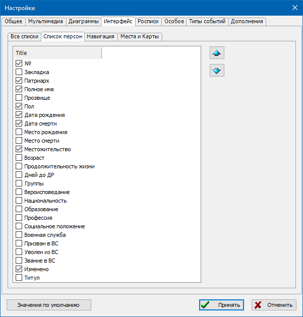
Навигация
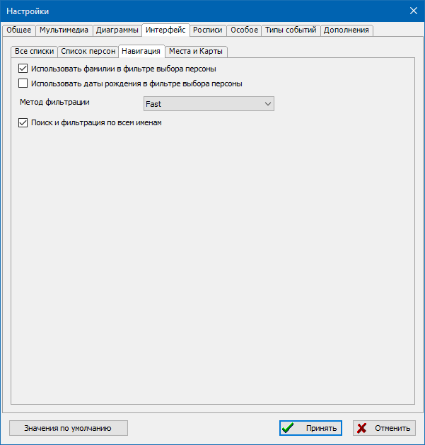
- Использовать фамилии в фильтре выбора персоны
-
Данная опция включает автоматическую подстановку фамилии ребенка в фильтр диалога выбора/добавления отца или матери,
а также подстановку фамилии родителя в фильтр диалога выбора/добавления ребенка.
Подстановку фамилии можно скорректировать вручную.
- Использовать даты рождения в фильтре выбора персоны
-
Данная опция включает использование даты рождения ребенка в диалоге выбора/добавления отца или матери,
а также использование даты рождения родителя в диалоге выбора/добавления ребенка
(отображаются только персоны родившиеся до даты рождения ребенка или родившиеся после даты рождения родителя).
Для исключения ложных срабатываний, величина допустимого возраста деторождения не учитывается.
Отсутствие даты рождения у каких либо персон рассматривается как допустимый вариант.
- Метод фильтрации (RegEx, FastIgnoreCase, Fast)
-
Эта опция определяет алгоритм, который будет использоваться для фильтрации и поиска.
RegEx - надежный, но самый медленный из трех (при количестве персон в базе свыше 100-200 тысяч возможны небольшие задержки).
FastIgnoreCase - быстрый алгоритм фильтрации, есть ограничения по поддерживаемым сочетаниям масок, сравнивает с игнорированием регистра символов.
Fast - наиболее быстрый алгоритм фильтрации, есть ограничения по поддерживаемым сочетаниям масок, учитывает регистр символов.
- Поиск и фильтрация по всем именам
-
Если в персональных записях имеется более одного имени -
при включенной опции поиск и фильтрация будут выполняться
по всем именам. Если опция выключена - только по первым именам.
Места и Карты
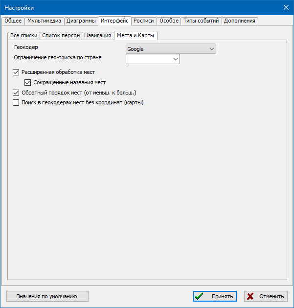
- Геокодер
-
Опция определяет сервис-источник, который будет использоваться для поиска географических координат мест по названию
(см. Записи географических мест и Карты).
- Ограничение гео-поиска по стране
-
Опция используется для ограничения результатов географического поиска мест
на определенной локали (язык/страна).
- Расширенная обработка мест
-
Все операции по обработке и подстановке местоположений с участием записей мест
будут учитывать возможное наличие исторических сведений о привязке названий мест
к датам, возможное наличие иерархических связей между местами
(см. Записи географических мест).
- Сокращенные названия мест
-
При наличии в записях мест сокращенного названия, будет в первую очередь использоваться оно.
- Обратный порядок мест (от меньш. к больш.)
-
При формировании длинного исторического наименования места по имеющейся иерархии локаций,
будет использоваться обратный порядок перечисления - от меньшего к большему.
При выключенной опции прямой - от большего к меньшему.
- Поиск в геокодерах мест без координат (карты)
-
При загрузке в картах списка мест с привязкой к людям и событиям,
если у места нет заданных координат,
при включенной опции координаты будут автоматически запрошены через геокодер
(это сильно замедляет процесс подготовки карт).
Росписи
Здесь располагаются настройки генерации родословной росписи.
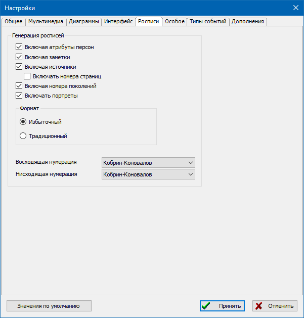
- Включая атрибуты персон
- Настройка "Включая атрибуты персон" - задаёт то, будут ли включаться в роспись факты/атрибуты (не события) из жизни человека.
- Включая заметки
- Настройка "Включая заметки" - задает включение в роспись текстовых заметок о биографии человека.
- Включая источники
-
Настройка "Включая источники" - задает необходимость пометки каждого человека номерами источников, в которых он упоминается.
Список источников приводится в конце росписи.
- Включая номера страниц
-
Задает необходимость вывода номеров страниц из использованных источников.
- Включая номера поколений
-
Опция включает отображение римских цифр номеров поколений.
В ином случае персоны перечисляются без визуального разделения по поколениям.
- Включать портреты
-
В генерируемую родословную роспись будут включены портреты персон.
- Формат: Избыточный / Традиционный
-
Настройка "Формат": "Избыточный" или "Традиционный", определяет насколько детально будет описан человек в росписи.
В большинстве случаев предпочительно использовать традиционный формат, т.к. избыточный содержит много лишней информации.
- Восходящая и нисходящая нумерация
-
Эти опции позволяют задать тип нумерации персон для облегчения поиска в тексте взаимосвязей между ними.
В различных странах и регионах имеются свои традиционные системы.
В GEDKeeper для нумерации восходящих родословных используются системы Кобрина-Коновалова и Соса-Страдоница.
Для нисходящих родословных системы Кобрина-Коновалова и д`Абовилля.
Особое
Редко используемые, или экспериментальные, или узко-специализированные опции.
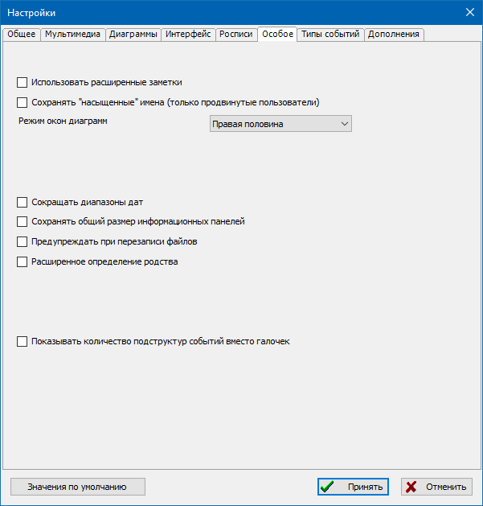
- Использовать расширенные заметки
-
Опция включает возможность ввода в программе заметок,
имеющих дополнительные возможности форматирования (нестандартный формат хранения оформления, BB-markup).
- Сохранять "насыщенные" имена (только продвинутые пользователи)
-
Данная опция включает режим, при котором в файл базы данных при сохранении,
записывается максимально избыточные структуры персональных имен (с дублированием информации).
Это делает функционально такой же файл большего объема.
- Режим окон диаграмм (Обычный, Левая половина, Правая половина, Максимизировать)
-
Опция включает при вызове окна диаграмм возможность распахивания на весь экран,
выравнивания окна на левую или правую половину.
Полезно при использовании программы на широких экранах в режиме разделения
(основное окно с таблицами слева, диаграммы справа, или наоборот).
- Сокращать диапазоны дат
-
В диаграммах деревьев и родословных росписях, диапазоны дат, в которых присутствуют
только годы (вида "1890 - 1895") будут сокращаться до записи вида "1890/95".
- Сохранять общий размер информационных панелей
-
С этой опцией, панели информации о записях (справа от таблиц в закладках главного окна)
будут иметь сохраняемый одинаковый размер, восстанавливаемый при входе в программу.
- Предупреждать при перезаписи файлов
- При использовании операции "Сохранить как" в существующий файл будет выдано предупреждение.
- Расширенное определение родства
-
В калькуляторе родственных связей и в деревьях с включенным отображением родства,
будут определяться такие связи как единокровные и единоутробные братья и сестры,
усыновления/удочерения, родные и неродные родители, гражданские браки.
- Показывать количество подструктур событий вместо галочек
-
В таблицах событий персон или семей, в столбцах наличия ссылок на источники,
заметок или мультимедиа (подструктур), обычно отображаются простые "галочки".
При использовании этой опции вместо галочки будет выводиться число подструктур.
Типы событий
Инструмент настройки использования стандартных и пользовательских типов событий.
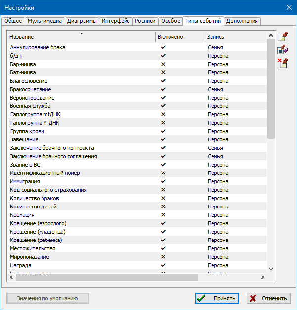
Дополнения
Данная закладка носит только информационный характер
и отображает полный список включенных в программе плагинов.
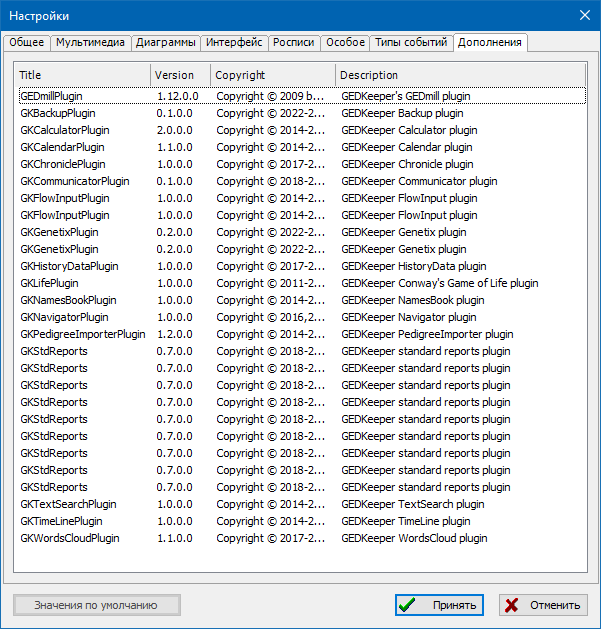